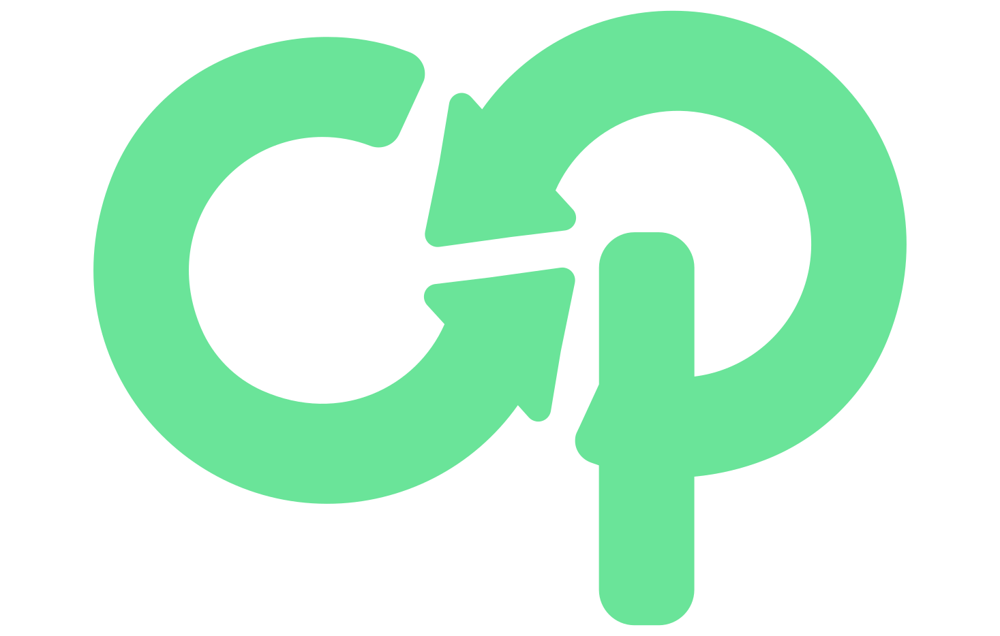

Logo Assets
Every asset in assets/manifest.json, rendered on its intended background. Primary = black on white/green, Secondary = white on dark/green, Tertiary = green on dark only, used sparingly.

Color Palette FACT p.14
Exact hex/RGB/CMYK from the brand guidelines. No tints, shades, secondary accent, or semantic colors are defined in the source — none are invented here.
#6ae499 · R106 G228 B153"Used with some text headlines, numbers, icons and some background."
#162a3d · R22 G42 B61"Used with paragraphs and backgrounds."
#020601 · R2 G6 B1"Used with main headlines and the text on the green color."
Typography FACT p.12
Hierarchy sizes are concrete DEFAULT values chosen to satisfy the PDF's relative rules (e.g. "half size of the main headline"). Arabic mapping is INFERRED — the source never mentions Arabic in its hierarchy page.
Optimization, compounding.
Simple, Practical, Profitable.
For e-commerce businesses.
Sora is the voice of our brand. Strong, modern, and confident, it ensures clarity, impact, and timeless presence across every visual.
نص حكيم له سر قاطع وذو شأن عظيم مكتوب على ثوب أخضر
Iconography FACT p.16
"Minimal, with rounded edges and rounded corners... green brand color on the black background." 40 UI icons built to this spec, indexed in assets/manifest.json's icons[]. Green-only — no light-background variant exists in the source.
Extrapolated Components NOT OFFICIALLY SPECIFIED
Inputs, cards, and badges are not defined anywhere in the brand guidelines. These are styled to match the palette/typography for practical usability — get design sign-off before treating as brand law in client-facing work.
Inputs
Cards
Light surface
Big Stone body text on white.
Dark surface
White text on Black Forest.
Accent surface
Required Black Forest text on Pastel Green.
Badges
New OptimizedPurpose/variants/do-don't/accessibility per component: design-system/COMPONENTS.md
Example: Contact Form NOT OFFICIALLY SPECIFIED
Composition example showing the extrapolated components (inputs, textarea, checkbox) and buttons (Primary + Ghost) working together. The same markup pattern is documented in design-system/COMPONENTS.md for direct reuse.
Grid & Spacing System DEFAULT
Not brand-specified — confirmed absent from the source. 12-column grid, 640/768/1024/1280px breakpoints, 1200px container max-width, reusing the existing 8px-based spacing scale. See design-system/layout.css.
Pattern FACT p.20
"Outline style in green... opacity to match the background color." Overlay mode on dark backgrounds, Multiply mode on Pastel Green. Tile density/opacity are DEFAULT authoring choices. Note: at the default 12% opacity, CSS overlay blend against Black Forest's near-pure-black reads as nearly flat — a verified color-math property of overlay-on-near-black, not a broken asset. See BRAND_IDENTITY.md §8.
Live CSS version — opacity boosted to 45% in this demo only (real shipped default is 12%, deliberately subtle so it doesn't fight foreground content). The left box below will still look flat even boosted — that's not a display error, it's the actual overlay-on-near-black limitation explained above: opacity doesn't fix it because the blend formula itself collapses against a near-zero-luminance base. The right box (multiply/green) genuinely shows the boost working, since multiply isn't affected the same way. Use the pre-composited backgrounds below for a guaranteed-visible result on Black Forest.
Pre-composited backgrounds — guaranteed-correct, no blend-mode dependency. This is what actually fixes the Black Forest case above:
Rendered as inline SVG below (not <img>) so stroke weight is live-tunable — edit --op-pattern-bg-stroke-width / --op-pattern-bg-stroke-opacity in tokens.css and refresh, no rebuild step. The standalone pattern-bg-*.svg/.png files in design-system/pattern/backgrounds/ are a separate, portable baked snapshot of these same values — they don't update automatically; ask for a regeneration if you change the tokens and want the portable files to match.
Favicon Set UNOFFICIAL DERIVATION
No favicon spec exists in the source guidelines. icon-pastelgreen.svg on a transparent background, per explicit brand-owner direction — see design-system/favicon/README.md before official use (it also notes a transparency-rendering caveat on some platforms).